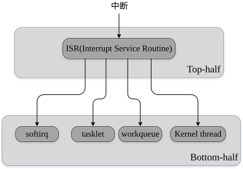
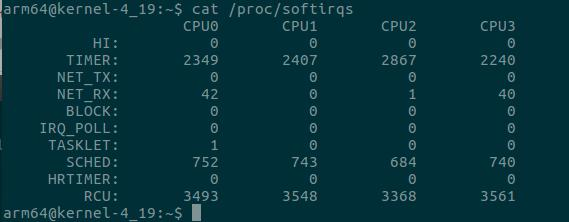
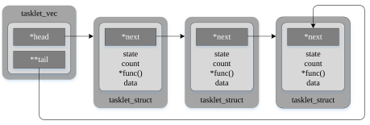
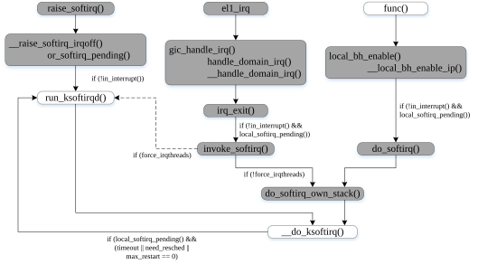
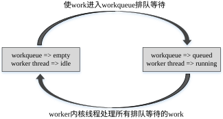
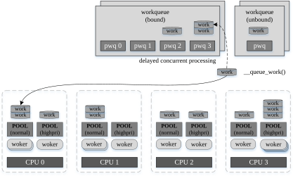
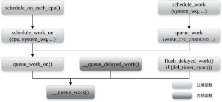
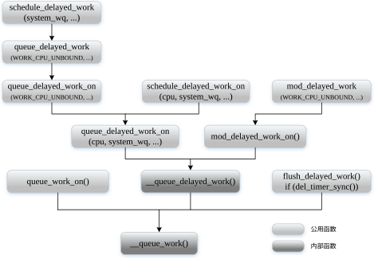

本文主要讨论中断的延迟处理机制，不仅说明了什么是上半部分「top-half」和下半部分「bottom-half」，还介绍了如何使用下半部分实现中断的延迟处理。
- Target Platform: Rock960c
- ARCH:arm64
- Linux Kernel:linux-4.19.27
top-half「上半部分」和bottom-half「下半部分」
在调用中断处理函数前会禁止中断，如果执行中断处理函数占用的时间越长，那么系统的响应性就越差，也就越有可能丢失更多中断。同时，在禁止中断后调用执行可阻塞函数很可能导致死锁或者增大响应延迟， 比如在中断禁止期间调用sleep函数，系统将会挂死「hang」。为了解决这些问题，一方面确保中断处理函数被隔离在一个安全的执行环境「中断上下文」内运行，另一方面提高中断处理函数的执行速度。
将中断处理函数要完成的任务一分为二，得出上半部分和下半部分，上半部分在执行中断处理函数期间完成，下半部分则推迟到中断处理函数完成之后才开始处理。上半部分在中断上下文「interrupt context」内越快完成越好，而可中断任务或其他费时任务都尽量推迟在下半部分进行。除此之外，上半部分还主要负责为下一个中断的发生做好准备和设置并调度下半部分执行的任务，而下半部分主要负责在进程上下文「process context」或中断上下文「interrupt context」内处理对时间要求较宽松的任务。比如，假设一个设备为了传输数据而产生了一个中断，上半部分负责从设备拷贝数据到内存，而下半部分负责完成较费时的数据处理任务，当然这样的方式不一定是最好的，但如果设备拥有足够大的硬件缓冲区，那么根据设备这个特性将可能通过其他方法完成数据的处理。尽管可以根据下半部分代码的要求选择临时禁用本地中断，但禁止中断的时间越短越好。
在Linux内核中，实现的多个下半部分机制分别是softirq、tasklet、workqueue和kernel thread。注意hardirq和softirq与top-half和bottom-half并不等同，softirq和tasklet都是执行在中断上下文「interrupt context」，而workqueue「工作队列」和kernel thread「内核线程」都是执行在进程上下文「process context」。

图1 上半部分与下半部分
硬中断「hardirq」和软中断「softirq」
在中断「interrupt」 的第一节，从体系架构的角度说明了硬件中断「hardware irq」和软件中断「software irq」。在Linux内核，所有中断也划分为两类：硬件中断和软件中断。接下来看看Linux内核是如何定义硬中断和软中断的，硬中断指的是处理硬件中断和IPIs「Inter Processor Interrupts」的硬中断上下文「hard interrupt context」，其既不可能出现睡眠也不可能被抢占「preemption」，对处理时间的要求比较苛刻，中断处理程序执行的速度越快越好，这样能够提高系统的实时性。软中断指的是处理费时任务的软中断上下文，其既不可能出现睡眠也不可能被软中断上下文执行的其它任务抢占，但可以被硬中断上下文执行的处理任务抢占， 对处理时间的要求较宽松，主要处理比较耗时的和可中断的任务。不过，在硬中断上下文和软中断上下文之间出现共享数据时必须考虑数据同步「synchronization」问题。
softirq「软中断」
softirq也是Linux下半部分「bottom-half」机制中的一种延迟处理机制，运行在软中断上下文并能高效地处理延迟任务。
通过查看/proc/softirq能够获得系统各个CPU的softirq统计信息。

图2 读取/proc/softirqs时输出内容
softirq机制初始化
在start_kernel()中，先完成中断硬件的初始化，然后才进行softirq机制的初始化。由于tasklet是softirq「软中断」的一部分，在softirq初始化中不仅为实现tasklet机制做准备，而且还注册处理tasklet的动作「action」。
kernel/softirq.c的softirq_init()1
2
3
4
5
6
7
8
9
10
11
12
13
14void __init softirq_init(void)
{
int cpu;
for_each_possible_cpu(cpu) {
per_cpu(tasklet_vec, cpu).tail =
&per_cpu(tasklet_vec, cpu).head;
per_cpu(tasklet_hi_vec, cpu).tail =
&per_cpu(tasklet_hi_vec, cpu).head;
}
open_softirq(TASKLET_SOFTIRQ, tasklet_action);
open_softirq(HI_SOFTIRQ, tasklet_hi_action);
}
通过遍历支持的所有CPU「possible cpu」初始化每个CPU对应的tasklet_vec和tassklet_hi_vec两个链表。这样做的缘由是分别指向两个链表头部的两个tasklet变量都被声明为percpu变量，如下所示：
1 | <kernel/softirq.c> |

图3 tasklet_vec链表的示意图
为TASKLET_SOFTIRQ和HI_SOFTIRQ分别指定了tasklet_action和tasklet_hi_action处理函数，至于其他的softirq的处理函数也都是在它们各自的初始化函数中通过open_softirq函数指定的。
softirq与tasklet
让我们对比一下softirq和tasklet的功能特点。softirq是在编译链接时静态定义的，也就是提前分配的，而tasklet是在运行时动态创建和注册的。一个softirq的处理函数能够并行地运行在多个CPU 上，因此softirq的处理函数对共享资源操作时需要同步。然而同一个tasklet处理函数不能同时运行，因此同步是不必要的。
softirq处理函数注册
内核为每个softirq指定一个处理函数，正如硬件中断一样也具有处理函数。
1 | <kernel/softirq.c> |
通过softirq对应编号索引softirq_vec数组，为指定的softirq设置处理函数「action」。
softirq触发
接下解释内核是如何触发软中断的。不过目前为了触发软中断，多数是调用raise_softirq()函数来触发指定软中断。
kernel/softirq.c中raise_softirq()和raise_softirq_irqoff1
2
3
4
5
6
7
8
9
10
11
12
13
14
15
16
17
18
19
20
21
22
23
24
25
26
27
28
29
30
31
32
33
34void raise_softirq(unsigned int nr)
{
unsigned long flags;
local_irq_save(flags);
raise_softirq_irqoff(nr);
local_irq_restore(flags);
}
/*
* This function must run with irqs disabled!
*/
inline void raise_softirq_irqoff(unsigned int nr)
{
__raise_softirq_irqoff(nr);
/*
* If we're in an interrupt or softirq, we're done
* (this also catches softirq-disabled code). We will
* actually run the softirq once we return from
* the irq or softirq.
*
* Otherwise we wake up ksoftirqd to make sure we
* schedule the softirq soon.
*/
if (!in_interrupt())
wakeup_softirqd();
}
void __raise_softirq_irqoff(unsigned int nr)
{
trace_softirq_raise(nr);
or_softirq_pending(1UL << nr);
}
- 保存当前的硬件中断状态并禁止当前核心的中断，本质上它就是local_irq_disabled()函数又添加了一个中断状态保存功能。是否需要调用保存中断状态的local_irq_save()取决于具体的需求和场景。
- 在中断禁止的状态下调用触发softirq的函数
- 进一步调用内部触发softirq的函数
- 如果当前没有处在中断上下文，将唤醒ksoftirqd内核线程。内核线程ksoftirqd是在启动阶段预先创建的，而且每个CPU都对应一个该内核线程，其优先级是SCHED_NORMAL。这里所说的中断上下文既可以是硬件中断「hardirq」上下文也可以是软中断「softirq」上下文。
- 标记指定的softirq为待处理「pending」状态。本质上，内核用irq_cpustat_t数据结构静态定义了一个percpu irq_stat变量，它包含了一个
__softirq_pending字段，该字段中每个bit位都对应一种softirq，一旦当前CPU私有__softirq_pending字段中某一个bit位被置1，那就是表示当前CPU上至少有一个对应的softirq是待处理的。如果在当前CPU所属的__softirq_pending字段中特定softirq对应的bit位未置位，那么该函数就会将其对应bit位置1，以表示至少有一个该softirq是待处理的。
softirq处理
下面将分析待处理softirq的处理过程。一旦完成硬件中断的处理过程，如果存在待处理的softirq，那么将进入软中断上下文「不是硬件中断上下文」开始进行未处理softirq的处理过程。因此，在下半部机制中softirq是实时性最好的和处理最及时的。图4给出了el1_irq的执行路径。除此之外，驱动代码或其他函数会先禁用了下半部机制，然后它们在处理完后需再次激活下半部机制，那么此时将可能对待处理softirq进行处理，图4右边的流程正是这种情况的处理路径。最后，内核线程ksoftirqd也可能进行softirq的处理，而且每个CPU都有一个这样的内核线程。如下几种情况会使用内核线程来处理softirq：
- 调用raise_softirq()来触发softirq
- 在硬件中断处理路径上检测到已经设置了force_irqthreads（在内核命令行添加threadirqs参数）
- 已经较长时间在__do_softirq()内处理待处理的softirq或超过了最大重复次数

图4 softirq的处理流程
__do_softirq()：核心的softirq处理函数
接下来详细地分析一下softirq是如何在__do_softirq函数中被准确处理的。
kernel/softirq.c中__do_softirq()1
2
3
4
5
6
7
8
9
10
11
12
13
14
15
16
17
18
19
20
21
22
23
24
25
26
27
28
29
30
31
32
33
34
35
36
37
38
39
40
41
42
43
44
45
46
47
48
49
50
51
52
53
54
55
56
57
58
59
60
61
62
63
64
65
66
67
68
69
70
71
72
73asmlinkage __visible void __softirq_entry __do_softirq(void)
{
unsigned long end = jiffies + MAX_SOFTIRQ_TIME;
unsigned long old_flags = current->flags;
int max_restart = MAX_SOFTIRQ_RESTART;
struct softirq_action *h;
bool in_hardirq;
__u32 pending;
int softirq_bit;
/*
* Mask out PF_MEMALLOC s current task context is borrowed for the
* softirq. A softirq handled such as network RX might set PF_MEMALLOC
* again if the socket is related to swap
*/
current->flags &= ~PF_MEMALLOC;
pending = local_softirq_pending();
account_irq_enter_time(current);
__local_bh_disable_ip(_RET_IP_, SOFTIRQ_OFFSET);
in_hardirq = lockdep_softirq_start();
restart:
/* Reset the pending bitmask before enabling irqs */
set_softirq_pending(0);
local_irq_enable();
h = softirq_vec;
while ((softirq_bit = ffs(pending))) {
unsigned int vec_nr;
int prev_count;
h += softirq_bit - 1;
vec_nr = h - softirq_vec;
prev_count = preempt_count();
kstat_incr_softirqs_this_cpu(vec_nr);
trace_softirq_entry(vec_nr);
h->action(h);
trace_softirq_exit(vec_nr);
if (unlikely(prev_count != preempt_count())) {
pr_err("huh, entered softirq %u %s %p with preempt_count %08x, exited with %08x?\n",
vec_nr, softirq_to_name[vec_nr], h->action,
prev_count, preempt_count());
preempt_count_set(prev_count);
}
h++;
pending >>= softirq_bit;
}
rcu_bh_qs();
local_irq_disable();
pending = local_softirq_pending();
if (pending) {
if (time_before(jiffies, end) && !need_resched() &&
--max_restart)
goto restart;
wakeup_softirqd();
}
lockdep_softirq_end(in_hardirq);
account_irq_exit_time(current);
__local_bh_enable(SOFTIRQ_OFFSET);
WARN_ON_ONCE(in_interrupt());
current_restore_flags(old_flags, PF_MEMALLOC);
}
workqueue「工作队列」

图5 wokequeue的状态变化
cmwq「Concurrency-Managed Workqueues」

图6 cmwq框架结构

图7 __queue_work()调用流程 I

图7 __queue_work()调用流程 II